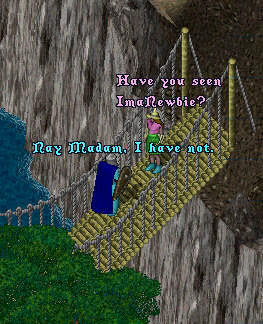
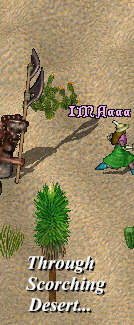
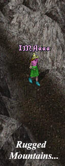
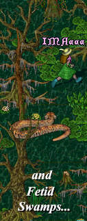
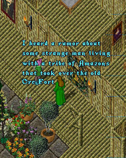
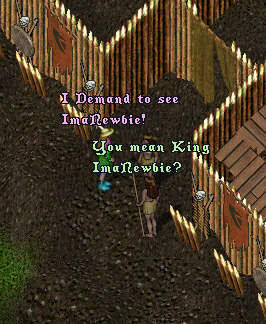
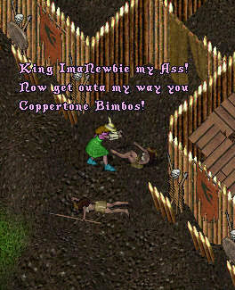
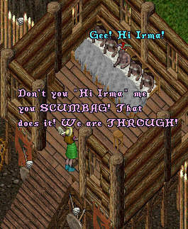

Episode 57: ImaNewbie and the Lost Tribe of Amazon Women (Part 3) - Irma sets out on her quest in the New Lands to find her lost love, ImaNewbie.

Fearlessly Irma presses on through the harsh
terrain, searching for her man!



Then finally, in the Inn in Papua Irma meets a traveller
who may have a clue to ImaNewbie's whereabouts

Thrilled with the news that ImaNewbie is still alive,
she rushes to be swept headlong into his arms once again.


